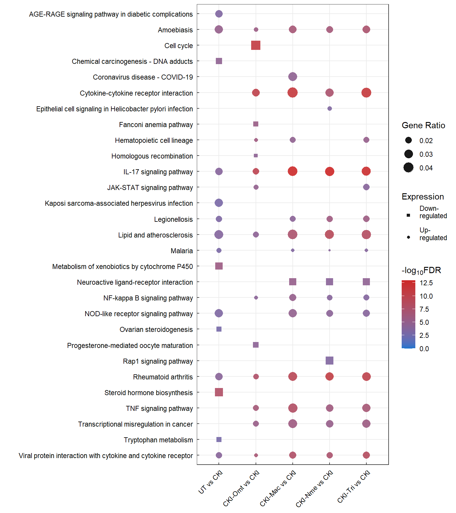

KEGG Analysis
Ha Tran
19/10/2021
Last updated: 2021-11-13
Checks: 5 2
Knit directory: 01_CKI_DGE/1_analysis/
This reproducible R Markdown analysis was created with workflowr (version 1.6.2). The Checks tab describes the reproducibility checks that were applied when the results were created. The Past versions tab lists the development history.
The R Markdown file has unstaged changes. To know which version of the R Markdown file created these results, you’ll want to first commit it to the Git repo. If you’re still working on the analysis, you can ignore this warning. When you’re finished, you can run wflow_publish to commit the R Markdown file and build the HTML.
The global environment had objects present when the code in the R Markdown file was run. These objects can affect the analysis in your R Markdown file in unknown ways. For reproduciblity it’s best to always run the code in an empty environment. Use wflow_publish or wflow_build to ensure that the code is always run in an empty environment.
The following objects were defined in the global environment when these results were created:
| Name | Class | Size |
|---|---|---|
| anno | data.frame | 2.3 Kb |
| anno_colour | character | 624 bytes |
| anno_colours | list | 912 bytes |
| common | data.frame | 310 Kb |
| comparison_group | data.frame | 1.1 Kb |
| contrast | matrix;array | 1.7 Kb |
| designMatrix | matrix;array | 3.5 Kb |
| dge | DGEList | 12 Mb |
| goana_treat | list | 22.2 Mb |
| goana_treat_sig | list | 546 Kb |
| goSummaries | tbl_df;tbl;data.frame | 13.4 Mb |
| group.labs | factor | 944 bytes |
| i | integer | 56 bytes |
| logCPM | matrix;array | 8.4 Kb |
| MAplot | list | 48 bytes |
| merged_go | data.frame | 18 Kb |
| minPath | numeric | 56 bytes |
| my_palette | character | 12.6 Kb |
| NB_dispersion | DGEList | 12.5 Mb |
| qlf | list | 101 Mb |
| qlf_all | list | 49.2 Mb |
| qlf_decideTest | list | 10.8 Kb |
| qlf_dispersion | DGEGLM | 20.6 Mb |
| qlf_sig | list | 37.5 Mb |
| top_go | list | 30.2 Kb |
| top_unique | list | 256.4 Kb |
| treat | list | 96.1 Mb |
| treat_all | list | 49.2 Mb |
| treat_decideTest | list | 10.8 Kb |
| treat_sig | list | 1.7 Mb |
| unique | data.frame | 4.6 Kb |
| x | character | 120 bytes |
The command set.seed(12345) was run prior to running the code in the R Markdown file. Setting a seed ensures that any results that rely on randomness, e.g. subsampling or permutations, are reproducible.
Great job! Recording the operating system, R version, and package versions is critical for reproducibility.
Nice! There were no cached chunks for this analysis, so you can be confident that you successfully produced the results during this run.
Great job! Using relative paths to the files within your workflowr project makes it easier to run your code on other machines.
Great! You are using Git for version control. Tracking code development and connecting the code version to the results is critical for reproducibility.
The results in this page were generated with repository version 848e971. See the Past versions tab to see a history of the changes made to the R Markdown and HTML files.
Note that you need to be careful to ensure that all relevant files for the analysis have been committed to Git prior to generating the results (you can use wflow_publish or wflow_git_commit). workflowr only checks the R Markdown file, but you know if there are other scripts or data files that it depends on. Below is the status of the Git repository when the results were generated:
Ignored files:
Ignored: .Rhistory
Ignored: .Rproj.user/
Untracked files:
Untracked: 0_data/rds_object/qlf_all.rds
Untracked: 0_data/rds_object/qlf_sig.rds
Untracked: 0_data/rds_object/treat_all.rds
Untracked: 0_data/rds_object/treat_sig.rds
Untracked: 1_analysis/about.html
Untracked: 1_analysis/dge.html
Untracked: 1_analysis/figure/dge.Rmd/NBDispersion-1.png
Untracked: 1_analysis/figure/dge.Rmd/coolmap-1.png
Untracked: 1_analysis/figure/dge.Rmd/heatmap_common-1.png
Untracked: 1_analysis/figure/dge.Rmd/heatmap_unique-1.png
Untracked: 1_analysis/figure/dge.Rmd/qlf_dispersion-1.png
Untracked: 1_analysis/figure/dge.Rmd/volcano_treat-1.png
Untracked: 1_analysis/figure/dge.Rmd/volcano_treat-2.png
Untracked: 1_analysis/figure/dge.Rmd/volcano_treat-3.png
Untracked: 1_analysis/figure/dge.Rmd/volcano_treat-4.png
Untracked: 1_analysis/figure/dge.Rmd/volcano_treat-5.png
Untracked: 1_analysis/figure/go.Rmd/
Untracked: 1_analysis/figure/kegg.Rmd/completePathway-1.png
Untracked: 1_analysis/figure/kegg.Rmd/dotPlot-1.png
Untracked: 1_analysis/figure/kegg.Rmd/partialPathway, -1.png
Untracked: 1_analysis/figure/kegg.Rmd/partialPathway-1.png
Untracked: 1_analysis/figure/setUp.Rmd/afterFiltering-2.png
Untracked: 1_analysis/go.html
Untracked: 1_analysis/index.html
Untracked: 1_analysis/site_libs/
Untracked: 2_plots/1_setup/after_normalisation.svg
Untracked: 2_plots/2_dge/MA_treat_CKI-Mac vs CKI.svg
Untracked: 2_plots/2_dge/MA_treat_CKI-Nme vs CKI.svg
Untracked: 2_plots/2_dge/MA_treat_CKI-Omt vs CKI.svg
Untracked: 2_plots/2_dge/MA_treat_CKI-Tri vs CKI.svg
Untracked: 2_plots/2_dge/MA_treat_UT vs CKI.svg
Untracked: 2_plots/2_dge/NB_dispersion.svg
Untracked: 2_plots/2_dge/heatmap_logCPM_common.svg
Untracked: 2_plots/2_dge/heatmap_logCPM_unique.svg
Untracked: 2_plots/2_dge/pValue_treat_CKI-Mac vs CKI.svg
Untracked: 2_plots/2_dge/pValue_treat_CKI-Nme vs CKI.svg
Untracked: 2_plots/2_dge/pValue_treat_CKI-Omt vs CKI.svg
Untracked: 2_plots/2_dge/pValue_treat_CKI-Tri vs CKI.svg
Untracked: 2_plots/2_dge/pValue_treat_UT vs CKI.svg
Untracked: 2_plots/2_dge/volcano_treat_CKI-Mac vs CKI.svg
Untracked: 2_plots/2_dge/volcano_treat_CKI-Nme vs CKI.svg
Untracked: 2_plots/2_dge/volcano_treat_CKI-Omt vs CKI.svg
Untracked: 2_plots/2_dge/volcano_treat_CKI-Tri vs CKI.svg
Untracked: 2_plots/2_dge/volcano_treat_UT vs CKI.svg
Untracked: 2_plots/3_go/
Untracked: 2_plots/4_kegg/
Untracked: 3_output/enrichKEGG_treat_sig.xlsx
Untracked: 3_output/goana_treat.xlsx
Untracked: 3_output/kegga_treat_sig.xlsx
Untracked: 3_output/qlf_decideTest.xlsx
Untracked: 3_output/qlf_sig.xlsx
Untracked: 3_output/treat_decideTest.xlsx
Untracked: 3_output/treat_sig.xlsx
Untracked: Meeting Notes.pdf
Unstaged changes:
Modified: 0_data/rds_object/dge.rds
Deleted: 0_data/rds_object/dge_treat_unfiltered.rds
Deleted: 0_data/rds_object/enrichGO_treat.rds
Deleted: 0_data/rds_object/enrichKEGG_treat_filtered.rds
Modified: 0_data/rds_object/qlf.rds
Deleted: 0_data/rds_object/qlf_filtered.rds
Modified: 0_data/rds_object/treat.rds
Deleted: 0_data/rds_object/treat_filtered.rds
Deleted: 0_data/rds_object/treat_unfiltered.rds
Modified: 1_analysis/dge.Rmd
Modified: 1_analysis/figure/dge.Rmd/MAplotCustom_treat-1.png
Modified: 1_analysis/figure/dge.Rmd/MAplotCustom_treat-2.png
Modified: 1_analysis/figure/dge.Rmd/MAplotCustom_treat-3.png
Modified: 1_analysis/figure/dge.Rmd/MAplotCustom_treat-4.png
Modified: 1_analysis/figure/dge.Rmd/MAplotCustom_treat-5.png
Modified: 1_analysis/figure/dge.Rmd/pValueHistogram_treat-1.png
Modified: 1_analysis/figure/dge.Rmd/pValueHistogram_treat-2.png
Modified: 1_analysis/figure/dge.Rmd/pValueHistogram_treat-3.png
Modified: 1_analysis/figure/dge.Rmd/pValueHistogram_treat-4.png
Modified: 1_analysis/figure/dge.Rmd/pValueHistogram_treat-5.png
Modified: 1_analysis/figure/setUp.Rmd/MDSplot-1.png
Modified: 1_analysis/figure/setUp.Rmd/afterFiltering-1.png
Modified: 1_analysis/figure/setUp.Rmd/libraryChecks-1.png
Modified: 1_analysis/figure/setUp.Rmd/pcaSampleGroup-1.png
Modified: 1_analysis/figure/setUp.Rmd/pcaSampleType-1.png
Modified: 1_analysis/figure/setUp.Rmd/visualisingNormalisation-1.png
Modified: 1_analysis/go.Rmd
Modified: 1_analysis/kegg.Rmd
Modified: 1_analysis/setUp.Rmd
Modified: 2_plots/1_setup/counts_before_and_after_filtering.svg
Modified: 2_plots/1_setup/library_size.svg
Modified: 2_plots/1_setup/sample_group_PCA_plot.svg
Modified: 2_plots/1_setup/sample_type_PCA_plot.svg
Deleted: 2_plots/2_dge/MA_plot_treat_CKI-Mac vs CKI.svg
Deleted: 2_plots/2_dge/MA_plot_treat_CKI-Nme vs CKI.svg
Deleted: 2_plots/2_dge/MA_plot_treat_CKI-Omt vs CKI.svg
Deleted: 2_plots/2_dge/MA_plot_treat_CKI-Tri vs CKI.svg
Deleted: 2_plots/2_dge/MA_plot_treat_UT vs CKI.svg
Deleted: 2_plots/2_dge/estimate_dispersion.svg
Modified: 2_plots/2_dge/qlf_dispersion.svg
Deleted: 2_plots/2_dge/qlf_pValue_histogram_CKI-Mac vs CKI.svg
Deleted: 2_plots/2_dge/qlf_pValue_histogram_CKI-Nme vs CKI.svg
Deleted: 2_plots/2_dge/qlf_pValue_histogram_CKI-Omt vs CKI.svg
Deleted: 2_plots/2_dge/qlf_pValue_histogram_CKI-Tri vs CKI.svg
Deleted: 2_plots/2_dge/qlf_pValue_histogram_UT vs CKI.svg
Deleted: 2_plots/2_dge/treat_pValue_histogram_CKI-Mac vs CKI.svg
Deleted: 2_plots/2_dge/treat_pValue_histogram_CKI-Nme vs CKI.svg
Deleted: 2_plots/2_dge/treat_pValue_histogram_CKI-Omt vs CKI.svg
Deleted: 2_plots/2_dge/treat_pValue_histogram_CKI-Tri vs CKI.svg
Deleted: 2_plots/2_dge/treat_pValue_histogram_UT vs CKI.svg
Deleted: 2_plots/2_dge/volcano_plot_treat_CKI-Mac vs CKI.svg
Deleted: 2_plots/2_dge/volcano_plot_treat_CKI-Nme vs CKI.svg
Deleted: 2_plots/2_dge/volcano_plot_treat_CKI-Omt vs CKI.svg
Deleted: 2_plots/2_dge/volcano_plot_treat_CKI-Tri vs CKI.svg
Deleted: 2_plots/2_dge/volcano_plot_treat_UT vs CKI.svg
Deleted: 3_output/enrichGO_treat.xlsx
Deleted: 3_output/enrichKEGG_treat_unfiltered.xlsx
Deleted: 3_output/qlf_filtered.xlsx
Deleted: 3_output/treat_filtered.xlsx
Note that any generated files, e.g. HTML, png, CSS, etc., are not included in this status report because it is ok for generated content to have uncommitted changes.
These are the previous versions of the repository in which changes were made to the R Markdown (1_analysis/kegg.Rmd) and HTML (docs/kegg.html) files. If you’ve configured a remote Git repository (see ?wflow_git_remote), click on the hyperlinks in the table below to view the files as they were in that past version.
| File | Version | Author | Date | Message |
|---|---|---|---|---|
| Rmd | 848e971 | Ha Tran | 2021-11-08 | adjust plot size, added dot plot for GO and KEGG, added heatmap for DE genes, minor cosmetic changes |
| html | 848e971 | Ha Tran | 2021-11-08 | adjust plot size, added dot plot for GO and KEGG, added heatmap for DE genes, minor cosmetic changes |
| Rmd | 1a47b45 | Ha Tran | 2021-10-31 | changed heatmap size |
| html | 1a47b45 | Ha Tran | 2021-10-31 | changed heatmap size |
| Rmd | 70049b2 | Ha Tran | 2021-10-31 | Remove old GO and KEGG code, adjusted directory paths, updated KEGG, minor cosmetic changes |
| html | 70049b2 | Ha Tran | 2021-10-31 | Remove old GO and KEGG code, adjusted directory paths, updated KEGG, minor cosmetic changes |
| Rmd | 6823b3c | Ha Tran | 2021-10-30 | Add minor cosmetic changes |
| html | 6823b3c | Ha Tran | 2021-10-30 | Add minor cosmetic changes |
| Rmd | 7a6571b | Ha Tran | 2021-10-30 | minor changes |
| html | 7a6571b | Ha Tran | 2021-10-30 | minor changes |
| html | f5f4f74 | Ha Tran | 2021-10-30 | please please please |
| Rmd | a6d8f8a | Ha Tran | 2021-10-30 | what is happening |
| html | a6d8f8a | Ha Tran | 2021-10-30 | what is happening |
| Rmd | d769a7c | Ha Tran | 2021-10-30 | Upload GO and KEGG analysis |
| html | d769a7c | Ha Tran | 2021-10-30 | Upload GO and KEGG analysis |
Data Setup
Load Library
# working with data
library(dplyr)
library(magrittr)
library(readr)
library(tibble)
library(reshape2)
library(tidyverse)
library(KEGGREST)
# Visualisation:
library(kableExtra)
library(ggplot2)
library(grid)
library(pander)
library(cowplot)
library(pheatmap)
# Custom ggplot
library(ggbiplot)
library(ggrepel)
# Bioconductor packages:
library(edgeR)
library(limma)
library(Glimma)
library(clusterProfiler)
library(org.Hs.eg.db)
library(enrichplot)
library(biomaRt)
# Set ggplot theme
theme_set(theme_minimal())Import RDS Data
DGElist object containing the raw feature count, sample metadata, and gene metadata, created in the Set Up stage.
# load DGElist previously created in the set up
dge <- readRDS(here::here("0_data/rds_object/dge.rds"))
designMatrix <- readRDS(here::here("0_data/rds_object/designMatrix.rds"))
contrast <- readRDS(here::here("0_data/rds_object/contrastMatrix.rds"))
treat <- readRDS(here::here("0_data/rds_object/treat.rds"))
treat_all <- readRDS(here::here("0_data/rds_object/treat_all.rds"))
treat_sig <- readRDS(here::here("0_data/rds_object/treat_sig.rds"))KEGG enrichment analysis
Using the clusterProfiler::enrichKEGG package
KEGG pathway enrichment analysis is performed with GLM:QLF + TREAT.
The top 30 most significant KEGG terms are displayed in relation to their respective comparison. KEGG terms with qvalue <= 0.2 are considered as significant
comparison_group=colnames(contrast) %>% as.data.frame()
# Create list object
enrichKEGG_treat=list()
enrichKEGG_treat_sig=list()
for (i in 1:ncol(contrast)){
#at each iteration, let x = name of each contrast group
x=comparison_group[i,]
#populate the enrichGo list with all KEGG terms
KEGGresults <- clusterProfiler::enrichKEGG(gene = treat_sig[[x]]$entrezid,
organism = "hsa",
pvalueCutoff = 0.05,
pAdjustMethod = "fdr")
enrichKEGG_treat[[x]] <- KEGGresults@result %>% as.data.frame()
#filter only significant KEGG terms
enrichKEGG_treat_sig[[x]] <- enrichKEGG_treat[[x]] %>% dplyr::filter(qvalue <= 0.2)
} edgeR::kegga package
Through edgeR, the proportion of upregulation and downregulated genes enriching the KEGG pathway can be determined
comparison_group=colnames(contrast) %>% as.data.frame()
# Create list object
kegga_treat=list()
kegga_treat_sig=list()
# kegga_treat_sig=list()
for (i in 1:ncol(contrast)){
#at each iteration, let x = name of each contrast group
x=comparison_group[i,]
#populate the enrichGo list with all KEGG terms
kegga_treat[[x]] <- edgeR::kegga.DGELRT(de = treat[[x]],
geneid = treat[[x]]$genes$entrezid,
species = "Hs",
FDR = 0.05,
trend = F)
kegga_treat_sig[[x]] <- topKEGG(results = kegga_treat[[x]], number = Inf)
}UT vs CKI
kegga_treat_sig[["UT vs CKI"]][1:30,] %>% as.data.frame() %>% kable(digits = Inf) %>% kable_styling(bootstrap_options = c("striped", "hover")) %>% scroll_box(height="600px")| Pathway | N | Up | Down | P.Up | P.Down | |
|---|---|---|---|---|---|---|
| path:hsa00140 | Steroid hormone biosynthesis | 19 | 0 | 6 | 1.000000e+00 | 8.170340e-09 |
| path:hsa00980 | Metabolism of xenobiotics by cytochrome P450 | 25 | 0 | 5 | 1.000000e+00 | 1.884032e-06 |
| path:hsa05146 | Amoebiasis | 61 | 6 | 0 | 7.503240e-06 | 1.000000e+00 |
| path:hsa05204 | Chemical carcinogenesis - DNA adducts | 21 | 0 | 4 | 1.000000e+00 | 2.653389e-05 |
| path:hsa05323 | Rheumatoid arthritis | 59 | 5 | 1 | 9.270535e-05 | 3.967717e-01 |
| path:hsa04061 | Viral protein interaction with cytokine and cytokine receptor | 32 | 4 | 2 | 1.051605e-04 | 3.014869e-02 |
| path:hsa04657 | IL-17 signaling pathway | 64 | 5 | 1 | 1.369199e-04 | 4.221298e-01 |
| path:hsa05417 | Lipid and atherosclerosis | 154 | 7 | 2 | 1.952556e-04 | 3.780755e-01 |
| path:hsa04933 | AGE-RAGE signaling pathway in diabetic complications | 80 | 5 | 1 | 3.913846e-04 | 4.963894e-01 |
| path:hsa04621 | NOD-like receptor signaling pathway | 129 | 6 | 0 | 5.026596e-04 | 1.000000e+00 |
| path:hsa05134 | Legionellosis | 50 | 4 | 0 | 6.050657e-04 | 1.000000e+00 |
| path:hsa05144 | Malaria | 24 | 3 | 0 | 8.230637e-04 | 1.000000e+00 |
| path:hsa05167 | Kaposi sarcoma-associated herpesvirus infection | 149 | 6 | 0 | 1.070941e-03 | 1.000000e+00 |
| path:hsa04913 | Ovarian steroidogenesis | 26 | 0 | 3 | 1.000000e+00 | 1.351010e-03 |
| path:hsa00380 | Tryptophan metabolism | 26 | 1 | 3 | 1.841189e-01 | 1.351010e-03 |
| path:hsa04060 | Cytokine-cytokine receptor interaction | 115 | 5 | 3 | 2.017760e-03 | 7.478291e-02 |
| path:hsa04110 | Cell cycle | 121 | 5 | 0 | 2.519758e-03 | 1.000000e+00 |
| path:hsa05160 | Hepatitis C | 121 | 5 | 0 | 2.519758e-03 | 1.000000e+00 |
| path:hsa05164 | Influenza A | 126 | 5 | 0 | 3.002825e-03 | 1.000000e+00 |
| path:hsa04218 | Cellular senescence | 141 | 5 | 0 | 4.852209e-03 | 1.000000e+00 |
| path:hsa00340 | Histidine metabolism | 13 | 0 | 2 | 1.000000e+00 | 5.264426e-03 |
| path:hsa04512 | ECM-receptor interaction | 48 | 3 | 1 | 6.146326e-03 | 3.370385e-01 |
| path:hsa04371 | Apelin signaling pathway | 89 | 0 | 4 | 1.000000e+00 | 6.956942e-03 |
| path:hsa00010 | Glycolysis / Gluconeogenesis | 46 | 0 | 3 | 1.000000e+00 | 6.974996e-03 |
| path:hsa04114 | Oocyte meiosis | 99 | 4 | 0 | 7.403498e-03 | 1.000000e+00 |
| path:hsa04936 | Alcoholic liver disease | 104 | 4 | 1 | 8.781487e-03 | 5.904131e-01 |
| path:hsa05162 | Measles | 108 | 4 | 0 | 9.997326e-03 | 1.000000e+00 |
| path:hsa05171 | Coronavirus disease - COVID-19 | 168 | 5 | 1 | 1.000957e-02 | 7.644099e-01 |
| path:hsa04068 | FoxO signaling pathway | 109 | 4 | 0 | 1.031748e-02 | 1.000000e+00 |
| path:hsa05120 | Epithelial cell signaling in Helicobacter pylori infection | 59 | 3 | 0 | 1.086421e-02 | 1.000000e+00 |
CKI-Mac vs CKI
kegga_treat_sig[["CKI-Mac vs CKI"]][1:30,] %>% as.data.frame() %>% kable(digits = Inf) %>% kable_styling(bootstrap_options = c("striped", "hover")) %>% scroll_box(height="600px")| Pathway | N | Up | Down | P.Up | P.Down | |
|---|---|---|---|---|---|---|
| path:hsa04657 | IL-17 signaling pathway | 64 | 14 | 0 | 1.798677e-13 | 1.000000e+00 |
| path:hsa04060 | Cytokine-cytokine receptor interaction | 115 | 16 | 2 | 5.183302e-12 | 4.519540e-01 |
| path:hsa05323 | Rheumatoid arthritis | 59 | 11 | 0 | 4.796450e-10 | 1.000000e+00 |
| path:hsa04668 | TNF signaling pathway | 94 | 12 | 1 | 7.127366e-09 | 7.158749e-01 |
| path:hsa04061 | Viral protein interaction with cytokine and cytokine receptor | 32 | 8 | 1 | 1.021030e-08 | 3.477287e-01 |
| path:hsa05417 | Lipid and atherosclerosis | 154 | 14 | 2 | 3.309226e-08 | 6.082960e-01 |
| path:hsa05146 | Amoebiasis | 61 | 9 | 2 | 1.608522e-07 | 1.934733e-01 |
| path:hsa05202 | Transcriptional misregulation in cancer | 122 | 11 | 2 | 1.119545e-06 | 4.825713e-01 |
| path:hsa04080 | Neuroactive ligand-receptor interaction | 76 | 0 | 8 | 1.000000e+00 | 7.023903e-06 |
| path:hsa04064 | NF-kappa B signaling pathway | 73 | 8 | 2 | 7.993704e-06 | 2.519953e-01 |
| path:hsa04621 | NOD-like receptor signaling pathway | 129 | 10 | 0 | 1.349574e-05 | 1.000000e+00 |
| path:hsa04640 | Hematopoietic cell lineage | 41 | 6 | 1 | 2.111429e-05 | 4.217049e-01 |
| path:hsa05171 | Coronavirus disease - COVID-19 | 168 | 11 | 0 | 2.465219e-05 | 1.000000e+00 |
| path:hsa05134 | Legionellosis | 50 | 6 | 1 | 6.721155e-05 | 4.873363e-01 |
| path:hsa05144 | Malaria | 24 | 4 | 0 | 3.211999e-04 | 1.000000e+00 |
| path:hsa04151 | PI3K-Akt signaling pathway | 225 | 11 | 6 | 3.354109e-04 | 7.881236e-02 |
| path:hsa04630 | JAK-STAT signaling pathway | 96 | 7 | 3 | 3.995657e-04 | 1.346765e-01 |
| path:hsa04933 | AGE-RAGE signaling pathway in diabetic complications | 80 | 6 | 0 | 8.982439e-04 | 1.000000e+00 |
| path:hsa05133 | Pertussis | 54 | 5 | 1 | 9.373373e-04 | 5.140760e-01 |
| path:hsa05167 | Kaposi sarcoma-associated herpesvirus infection | 149 | 8 | 2 | 1.200180e-03 | 5.902619e-01 |
| path:hsa05219 | Bladder cancer | 37 | 1 | 4 | 4.080434e-01 | 1.395048e-03 |
| path:hsa05120 | Epithelial cell signaling in Helicobacter pylori infection | 59 | 5 | 0 | 1.402484e-03 | 1.000000e+00 |
| path:hsa05332 | Graft-versus-host disease | 17 | 3 | 0 | 1.603850e-03 | 1.000000e+00 |
| path:hsa00532 | Glycosaminoglycan biosynthesis - chondroitin sulfate / dermatan sulfate | 18 | 0 | 3 | 1.000000e+00 | 1.609430e-03 |
| path:hsa05224 | Breast cancer | 102 | 0 | 6 | 1.000000e+00 | 2.331468e-03 |
| path:hsa04932 | Non-alcoholic fatty liver disease | 135 | 7 | 1 | 2.941332e-03 | 8.363805e-01 |
| path:hsa05142 | Chagas disease | 71 | 5 | 0 | 3.186862e-03 | 1.000000e+00 |
| path:hsa04936 | Alcoholic liver disease | 104 | 6 | 2 | 3.441766e-03 | 4.018733e-01 |
| path:hsa04512 | ECM-receptor interaction | 48 | 3 | 4 | 2.972377e-02 | 3.672074e-03 |
| path:hsa05140 | Leishmaniasis | 50 | 4 | 0 | 5.243869e-03 | 1.000000e+00 |
CKI-Nme vs CKI
kegga_treat_sig[["CKI-Nme vs CKI"]][1:30,] %>% as.data.frame() %>% kable(digits = Inf) %>% kable_styling(bootstrap_options = c("striped", "hover")) %>% scroll_box(height="600px")| Pathway | N | Up | Down | P.Up | P.Down | |
|---|---|---|---|---|---|---|
| path:hsa04657 | IL-17 signaling pathway | 64 | 13 | 1 | 1.069904e-13 | 7.038702e-01 |
| path:hsa05323 | Rheumatoid arthritis | 59 | 11 | 2 | 2.453107e-11 | 3.045174e-01 |
| path:hsa05417 | Lipid and atherosclerosis | 154 | 14 | 4 | 9.299453e-10 | 3.284634e-01 |
| path:hsa04061 | Viral protein interaction with cytokine and cytokine receptor | 32 | 7 | 3 | 3.640487e-08 | 2.174725e-02 |
| path:hsa04060 | Cytokine-cytokine receptor interaction | 115 | 11 | 5 | 3.760749e-08 | 6.558289e-02 |
| path:hsa05146 | Amoebiasis | 61 | 8 | 2 | 2.504620e-07 | 3.184025e-01 |
| path:hsa04668 | TNF signaling pathway | 94 | 9 | 3 | 6.796951e-07 | 2.594398e-01 |
| path:hsa05134 | Legionellosis | 50 | 7 | 1 | 9.208567e-07 | 6.133388e-01 |
| path:hsa05202 | Transcriptional misregulation in cancer | 122 | 9 | 4 | 6.060349e-06 | 1.969396e-01 |
| path:hsa04621 | NOD-like receptor signaling pathway | 129 | 8 | 0 | 7.064271e-05 | 1.000000e+00 |
| path:hsa04080 | Neuroactive ligand-receptor interaction | 76 | 1 | 8 | 5.588656e-01 | 8.644346e-05 |
| path:hsa05144 | Malaria | 24 | 4 | 0 | 1.118790e-04 | 1.000000e+00 |
| path:hsa04064 | NF-kappa B signaling pathway | 73 | 6 | 2 | 1.254328e-04 | 3.998752e-01 |
| path:hsa04015 | Rap1 signaling pathway | 142 | 1 | 10 | 7.841638e-01 | 3.445897e-04 |
| path:hsa05120 | Epithelial cell signaling in Helicobacter pylori infection | 59 | 5 | 0 | 4.060664e-04 | 1.000000e+00 |
| path:hsa05332 | Graft-versus-host disease | 17 | 3 | 1 | 7.254868e-04 | 2.757636e-01 |
| path:hsa04936 | Alcoholic liver disease | 104 | 6 | 2 | 8.540500e-04 | 5.849777e-01 |
| path:hsa04640 | Hematopoietic cell lineage | 41 | 4 | 3 | 9.266478e-04 | 4.136236e-02 |
| path:hsa05167 | Kaposi sarcoma-associated herpesvirus infection | 149 | 7 | 4 | 1.078795e-03 | 3.071872e-01 |
| path:hsa05200 | Pathways in cancer | 368 | 8 | 16 | 4.356827e-02 | 1.601716e-03 |
| path:hsa05020 | Prion disease | 207 | 8 | 2 | 1.689907e-03 | 9.040065e-01 |
| path:hsa05140 | Leishmaniasis | 50 | 4 | 2 | 1.957010e-03 | 2.416715e-01 |
| path:hsa05152 | Tuberculosis | 123 | 6 | 3 | 2.029032e-03 | 4.080082e-01 |
| path:hsa05171 | Coronavirus disease - COVID-19 | 168 | 7 | 1 | 2.150487e-03 | 9.595671e-01 |
| path:hsa04915 | Estrogen signaling pathway | 87 | 5 | 2 | 2.362883e-03 | 4.887625e-01 |
| path:hsa05133 | Pertussis | 54 | 4 | 2 | 2.600630e-03 | 2.696231e-01 |
| path:hsa04151 | PI3K-Akt signaling pathway | 225 | 8 | 11 | 2.839250e-03 | 3.528335e-03 |
| path:hsa01523 | Antifolate resistance | 27 | 3 | 1 | 2.886730e-03 | 4.010830e-01 |
| path:hsa00100 | Steroid biosynthesis | 16 | 0 | 3 | 1.000000e+00 | 3.059437e-03 |
| path:hsa05224 | Breast cancer | 102 | 0 | 7 | 1.000000e+00 | 3.075748e-03 |
CKI-Omt vs CKI
kegga_treat_sig[["CKI-Omt vs CKI"]][1:30,] %>% as.data.frame() %>% kable(digits = Inf) %>% kable_styling(bootstrap_options = c("striped", "hover")) %>% scroll_box(height="600px")| Pathway | N | Up | Down | P.Up | P.Down | |
|---|---|---|---|---|---|---|
| path:hsa04110 | Cell cycle | 121 | 3 | 23 | 4.135760e-01 | 1.149497e-11 |
| path:hsa04060 | Cytokine-cytokine receptor interaction | 115 | 17 | 2 | 6.437442e-11 | 9.032857e-01 |
| path:hsa04657 | IL-17 signaling pathway | 64 | 13 | 0 | 2.006953e-10 | 1.000000e+00 |
| path:hsa05323 | Rheumatoid arthritis | 59 | 11 | 1 | 1.340250e-08 | 8.678446e-01 |
| path:hsa04061 | Viral protein interaction with cytokine and cytokine receptor | 32 | 8 | 1 | 1.193469e-07 | 6.659379e-01 |
| path:hsa04668 | TNF signaling pathway | 94 | 12 | 0 | 2.353460e-07 | 1.000000e+00 |
| path:hsa04640 | Hematopoietic cell lineage | 41 | 8 | 0 | 9.333811e-07 | 1.000000e+00 |
| path:hsa05146 | Amoebiasis | 61 | 9 | 1 | 2.284843e-06 | 8.766280e-01 |
| path:hsa03460 | Fanconi anemia pathway | 48 | 0 | 10 | 1.000000e+00 | 3.468817e-06 |
| path:hsa05202 | Transcriptional misregulation in cancer | 122 | 12 | 3 | 3.975183e-06 | 7.831845e-01 |
| path:hsa04630 | JAK-STAT signaling pathway | 96 | 10 | 3 | 1.546535e-05 | 6.315429e-01 |
| path:hsa03440 | Homologous recombination | 39 | 0 | 8 | 1.000000e+00 | 3.773112e-05 |
| path:hsa05417 | Lipid and atherosclerosis | 154 | 12 | 1 | 4.259294e-05 | 9.950238e-01 |
| path:hsa04914 | Progesterone-mediated oocyte maturation | 77 | 0 | 11 | 1.000000e+00 | 4.954075e-05 |
| path:hsa04064 | NF-kappa B signaling pathway | 73 | 8 | 1 | 7.724718e-05 | 9.183598e-01 |
| path:hsa04114 | Oocyte meiosis | 99 | 1 | 12 | 8.554284e-01 | 1.174922e-04 |
| path:hsa00260 | Glycine, serine and threonine metabolism | 26 | 5 | 3 | 1.203799e-04 | 5.545767e-02 |
| path:hsa04080 | Neuroactive ligand-receptor interaction | 76 | 1 | 10 | 7.731078e-01 | 2.186150e-04 |
| path:hsa05134 | Legionellosis | 50 | 6 | 0 | 3.759009e-04 | 1.000000e+00 |
| path:hsa04115 | p53 signaling pathway | 67 | 4 | 9 | 4.011926e-02 | 3.839455e-04 |
| path:hsa03030 | DNA replication | 35 | 0 | 6 | 1.000000e+00 | 9.910943e-04 |
| path:hsa05144 | Malaria | 24 | 4 | 0 | 1.054800e-03 | 1.000000e+00 |
| path:hsa05167 | Kaposi sarcoma-associated herpesvirus infection | 149 | 9 | 2 | 2.375477e-03 | 9.630064e-01 |
| path:hsa05143 | African trypanosomiasis | 15 | 3 | 0 | 2.708445e-03 | 1.000000e+00 |
| path:hsa04621 | NOD-like receptor signaling pathway | 129 | 8 | 0 | 3.488666e-03 | 1.000000e+00 |
| path:hsa04923 | Regulation of lipolysis in adipocytes | 33 | 4 | 0 | 3.547179e-03 | 1.000000e+00 |
| path:hsa05332 | Graft-versus-host disease | 17 | 3 | 0 | 3.934360e-03 | 1.000000e+00 |
| path:hsa01230 | Biosynthesis of amino acids | 57 | 5 | 3 | 4.722445e-03 | 3.005321e-01 |
| path:hsa05162 | Measles | 108 | 7 | 3 | 4.848407e-03 | 7.091949e-01 |
| path:hsa05171 | Coronavirus disease - COVID-19 | 168 | 9 | 0 | 5.261665e-03 | 1.000000e+00 |
CKI-Tri vs CKI
kegga_treat_sig[["CKI-Tri vs CKI"]][1:30,] %>% as.data.frame() %>% kable(digits = Inf ) %>% kable_styling(bootstrap_options = c("striped", "hover")) %>% scroll_box(height="600px")| Pathway | N | Up | Down | P.Up | P.Down | |
|---|---|---|---|---|---|---|
| path:hsa04657 | IL-17 signaling pathway | 64 | 13 | 0 | 3.616725e-13 | 1.000000e+00 |
| path:hsa04060 | Cytokine-cytokine receptor interaction | 115 | 15 | 2 | 4.608758e-12 | 5.513003e-01 |
| path:hsa05323 | Rheumatoid arthritis | 59 | 11 | 0 | 6.791268e-11 | 1.000000e+00 |
| path:hsa04061 | Viral protein interaction with cytokine and cytokine receptor | 32 | 8 | 1 | 2.438238e-09 | 4.031305e-01 |
| path:hsa05417 | Lipid and atherosclerosis | 154 | 14 | 3 | 3.191468e-09 | 4.477029e-01 |
| path:hsa05146 | Amoebiasis | 61 | 9 | 2 | 3.369301e-08 | 2.547865e-01 |
| path:hsa04668 | TNF signaling pathway | 94 | 10 | 2 | 1.402841e-07 | 4.447782e-01 |
| path:hsa05202 | Transcriptional misregulation in cancer | 122 | 10 | 3 | 1.617675e-06 | 3.093831e-01 |
| path:hsa05134 | Legionellosis | 50 | 7 | 1 | 1.725302e-06 | 5.537732e-01 |
| path:hsa04640 | Hematopoietic cell lineage | 41 | 6 | 1 | 7.505255e-06 | 4.838920e-01 |
| path:hsa04080 | Neuroactive ligand-receptor interaction | 76 | 0 | 8 | 1.000000e+00 | 2.744942e-05 |
| path:hsa04630 | JAK-STAT signaling pathway | 96 | 7 | 3 | 1.314334e-04 | 1.982536e-01 |
| path:hsa04621 | NOD-like receptor signaling pathway | 129 | 8 | 0 | 1.357830e-04 | 1.000000e+00 |
| path:hsa05144 | Malaria | 24 | 4 | 0 | 1.604193e-04 | 1.000000e+00 |
| path:hsa04064 | NF-kappa B signaling pathway | 73 | 6 | 2 | 2.088869e-04 | 3.258244e-01 |
| path:hsa04218 | Cellular senescence | 141 | 8 | 5 | 2.506383e-04 | 7.561901e-02 |
| path:hsa04151 | PI3K-Akt signaling pathway | 225 | 10 | 7 | 3.152155e-04 | 6.946354e-02 |
| path:hsa05167 | Kaposi sarcoma-associated herpesvirus infection | 149 | 8 | 3 | 3.643350e-04 | 4.266085e-01 |
| path:hsa05120 | Epithelial cell signaling in Helicobacter pylori infection | 59 | 5 | 0 | 6.219373e-04 | 1.000000e+00 |
| path:hsa05171 | Coronavirus disease - COVID-19 | 168 | 8 | 0 | 8.075663e-04 | 1.000000e+00 |
| path:hsa05332 | Graft-versus-host disease | 17 | 3 | 0 | 9.511499e-04 | 1.000000e+00 |
| path:hsa00340 | Histidine metabolism | 13 | 0 | 3 | 1.000000e+00 | 1.020990e-03 |
| path:hsa04010 | MAPK signaling pathway | 217 | 9 | 4 | 1.030437e-03 | 4.579362e-01 |
| path:hsa04936 | Alcoholic liver disease | 104 | 6 | 3 | 1.384170e-03 | 2.315744e-01 |
| path:hsa05142 | Chagas disease | 71 | 5 | 0 | 1.445664e-03 | 1.000000e+00 |
| path:hsa04933 | AGE-RAGE signaling pathway in diabetic complications | 80 | 5 | 0 | 2.454243e-03 | 1.000000e+00 |
| path:hsa05140 | Leishmaniasis | 50 | 4 | 0 | 2.746668e-03 | 1.000000e+00 |
| path:hsa05219 | Bladder cancer | 37 | 1 | 4 | 3.539763e-01 | 2.764455e-03 |
| path:hsa05165 | Human papillomavirus infection | 258 | 7 | 11 | 3.227072e-02 | 2.906586e-03 |
| path:hsa05020 | Prion disease | 207 | 8 | 2 | 3.027138e-03 | 8.468534e-01 |
Visualisation
top_kegg=list()
for (i in 1:ncol(contrast)){
#at each iteration, let x = name of each contrast group
x=comparison_group[i,]
top_kegg[[x]] <- kegga_treat_sig[[x]][1:15,]
}
#combine all list from big merged_kegg into one
merged_kegg <- as.data.frame(do.call(rbind, lapply(top_kegg, as.data.frame))) %>% rownames_to_column("group")
#remove KEGG ID from group names
merged_kegg$group <- gsub(pattern = "\\..*", "", merged_kegg$group)
#direction column
merged_kegg <- merged_kegg %>% dplyr::mutate(direction = case_when
(Up > Down ~ "Up-\nregulated\n",
Up < Down ~ "Down-\nregulated\n",
TRUE ~ "Mutual"))
#geneRatio column
merged_kegg <- merged_kegg %>% dplyr::mutate(geneRatio = case_when
(Up > Down & group == "UT vs CKI" ~ Up/215,
Up > Down & group == "CKI-Omt vs CKI" ~ Up/689,
Up > Down & group == "CKI-Mac vs CKI" ~ Up/353,
Up > Down & group == "CKI-Nme vs CKI" ~ Up/382,
Up > Down & group == "CKI-Tri vs CKI" ~ Up/358,
Up < Down & group == "UT vs CKI" ~ Down/215,
Up < Down & group == "CKI-Omt vs CKI" ~ Down/689,
Up < Down & group == "CKI-Mac vs CKI" ~ Down/353,
Up < Down & group == "CKI-Nme vs CKI" ~ Down/382,
Up < Down & group == "CKI-Tri vs CKI" ~ Down/358,
))
#pvalue colum
merged_kegg <- merged_kegg %>% dplyr::mutate(pValue = case_when
(Up > Down ~ P.Up,
Up < Down ~ P.Down,
TRUE ~ P.Up))
merged_kegg <- merged_kegg %>% filter(pValue <= 0.05)
# Transform the column 'Description' into factors
merged_kegg$Pathway <- as.factor(merged_kegg$Pathway)
# Transform FDR values by -log10('FDR values')
merged_kegg$'|log10(FDR)|' <- -(log10(merged_kegg$pValue))
# Change factor order
merged_kegg$group <- factor(merged_kegg$group, levels = c("UT vs CKI", "CKI-Omt vs CKI", "CKI-Mac vs CKI", "CKI-Nme vs CKI", "CKI-Tri vs CKI"))
merged_kegg$Pathway <- factor(merged_kegg$Pathway, levels = rev(levels(merged_kegg$Pathway)))
group.labs <- merged_kegg$group
ggplot(merged_kegg, aes(x = Pathway, y = group)) +
geom_point(data=merged_kegg,aes(x=Pathway, y=group, size = geneRatio, colour = `|log10(FDR)|`, shape = direction), alpha=.9)+
# scale_y_discrete(labels =group.labs)+
scale_shape_manual(values = c(15,16,17))+
scale_color_gradient(low = "dodgerblue3", high = "firebrick3", limits=c(0, NA))+
coord_flip()+
theme_bw()+
theme(axis.ticks.length=unit(-0.1, "cm"),
axis.text.x = element_text(margin=margin(5,5,0,5,"pt"),angle = 45, hjust = 1),
axis.text.y = element_text(margin=margin(5,5,5,5,"pt")),
axis.text = element_text(color = "black"),
axis.title.x=element_blank())+
xlab(label = "")+
labs(color=expression("-log"[10]*"FDR"), size="Gene Ratio", shape = "Expression")
# theme(legend.position = "bottom")
ggsave(filename = "kegga_treat.svg", plot = last_plot(), path = here::here("2_plots/4_kegg/"))#kegg pathway of interest
kegg_id <- "hsa04110"
kegg_pathway <- KEGGREST::keggGet(kegg_id)
kegg_pathway_name <- kegg_pathway[[1]]$NAMEHeatmap of Cell cycle - Homo sapiens (human)
Partial
The partial heatmap illustrates the logFC of significant DE genes within the Cell cycle - Homo sapiens (human) pathway.
# kegg_id <- "hsa04657"
# kegg_pathway <- KEGGREST::keggGet(kegg_id)
# kegg_pathway_name <- kegg_pathway[[1]]$NAME
entrezID=list()
matrix_all=list()
for (i in 1:ncol(contrast)){
#at each iteration, let x = name of each contrast group
x=comparison_group[i,]
entrezID[[x]] <- kegg_pathway[[1]]$GENE %>% as.data.frame()
entrezID[[x]] <- entrezID[[x]][seq(1, nrow(entrezID[[x]]), 2),] %>% as.data.frame()
colnames(entrezID[[x]]) <- "entrezid"
match <- treat_sig[[x]]$entrezid %in% entrezID[[x]]$entrezid
matrix_all[[x]] <- treat_sig[[x]][match, c("gene_name", "logFC")]
}
big_matrix <- as.data.frame(do.call(rbind, lapply(matrix_all, as.data.frame))) %>% rownames_to_column("group")
big_matrix$group <- gsub(pattern = "\\..*", "", big_matrix$group)
big_matrix <- pivot_wider(big_matrix, names_from = group, values_from = logFC) %>% column_to_rownames("gene_name")
# big_matrix[is.na(big_matrix)]=-0.7305
summary(big_matrix) CKI-Mac vs CKI CKI-Nme vs CKI CKI-Omt vs CKI CKI-Tri vs CKI
Min. :-2.762 Min. :-3.720 Min. :-4.734 Min. :-3.899
1st Qu.:-1.899 1st Qu.:-2.129 1st Qu.:-3.202 1st Qu.:-2.058
Median :-1.891 Median :-2.035 Median :-2.492 Median :-1.924
Mean :-1.205 Mean :-1.643 Mean :-2.183 Mean :-1.638
3rd Qu.:-1.661 3rd Qu.:-1.921 3rd Qu.:-1.979 3rd Qu.:-1.752
Max. : 2.190 Max. : 1.973 Max. : 3.273 Max. : 2.302
NA's :25 NA's :24 NA's :4 NA's :22
UT vs CKI
Min. :1.921
1st Qu.:1.934
Median :2.150
Mean :2.150
3rd Qu.:2.226
Max. :2.519
NA's :25 ## this was a waste of time
# huge_matrix <- as.data.frame(do.call(rbind, lapply(treat_all, as.data.frame))) %>% rownames_to_column("group") %>% dplyr::select(c("group", "gene", "logFC"))
# huge_matrix$group <- gsub(pattern = "\\..*", "", huge_matrix$group)
# huge_matrix <- pivot_wider(huge_matrix, names_from = group, values_from = logFC) %>% column_to_rownames("gene")
# huge_matrix <- huge_matrix[rownames(big_matrix),]
my_palette <- colorRampPalette(c(
rgb(32,121,226, maxColorValue = 255),
# rgb(144,203,180, maxColorValue = 255),
rgb(255,255,255, maxColorValue = 255),
# rgb(251,192,52, maxColorValue = 255),
rgb(226,46,45, maxColorValue = 255)))(n = 201)
p <- pheatmap(mat = big_matrix,
cluster_cols = F,
cluster_rows = F,
clustering_distance_rows = "euclidean",
treeheight_row = 30,
treeheight_col = 20,
cutree_rows = 4,
cutree_cols = 3,
na_col = "white",
main = paste0("Heatmap of ", kegg_pathway_name,"\n"),
angle_col =90,
# scale = "row",
legend_breaks = c(seq(-8, 8, by = 1), max(big_matrix, na.rm = T)),
legend_labels = c(seq(-8, 8, by = 1), "logCPM\n"),
# border_color = F,
border_color = "gray90",
color = my_palette,
)
invisible(dev.print(device = svg, here::here("2_plots/4_kegg/heatmap_partial.svg")))entrezID=list()
matrix=list()
for (i in 1:ncol(contrast)){
#at each iteration, let x = name of each contrast group
x=comparison_group[i,]
entrezID[[x]] <- enrichKEGG_treat_sig[[x]][,c("ID", "geneID")] %>% as.data.frame()
entrezID[[x]] <- entrezID[[x]][kegg_id,"geneID"] %>% as.data.frame()
entrezID[[x]] <- separate_rows(entrezID[[x]],.,sep = "/")
colnames(entrezID[[x]]) <- "entrezid"
match <- treat_sig[[x]]$entrezid %in% entrezID[[x]]$entrezid
matrix[[x]] <- treat_sig[[x]][match, c("gene_name", "logFC")]
}
matrix_merged <-
matrix$`UT vs CKI` %>%
left_join(matrix$`CKI-Mac vs CKI`, by = "gene_name") %>%
left_join(matrix$`CKI-Nme vs CKI`, by = "gene_name") %>%
left_join(matrix$`CKI-Omt vs CKI`, by = "gene_name") %>%
left_join(matrix$`CKI-Tri vs CKI`, by = "gene_name") %>%
column_to_rownames("gene_name")
colnames(matrix_merged) <- c("UT\nvs\nCKI", "CKI-Mac\nvs\nCKI", "CKI-Nme\nvs\nCKI", "CKI-Omt\nvs\nCKI", "CKI-Tri\nvs\nCKI")
my_palette <- colorRampPalette(c(
rgb(32,121,226, maxColorValue = 255),
# rgb(144,203,180, maxColorValue = 255),
rgb(254,248,239, maxColorValue = 255),
# rgb(251,192,52, maxColorValue = 255),
rgb(226,46,45, maxColorValue = 255)))(n = 201)
pheatmap(mat = matrix_merged,
clustering_distance_rows = "euclidean",
treeheight_row = 70,
legend_labels = "logFC",
main = paste0("Heatmap of ", kegg_pathway_name),
# fontsize = 14,
# fontsize_row = 12,
# fontsize_number = 10,
# fontsize_col = 18,
angle_col =0,
border_color = "gray70",
color = my_palette)
invisible(dev.print(svg, here::here("2_plots/4_kegg/heatmap_partial.svg")))Complete Pathway
This heatmap illustrates the logfc of all the genes within the Cell cycle - Homo sapiens (human), regardless of their statistical significance. Th
entrezID=list()
matrix_all=list()
for (i in 1:ncol(contrast)){
#at each iteration, let x = name of each contrast group
x=comparison_group[i,]
entrezID[[x]] <- kegg_pathway[[1]]$GENE %>% as.data.frame()
entrezID[[x]] <- entrezID[[x]][seq(1, nrow(entrezID[[x]]), 2),] %>% as.data.frame()
colnames(entrezID[[x]]) <- "entrezid"
match <- treat_all[[x]]$entrezid %in% entrezID[[x]]$entrezid
matrix_all[[x]] <- treat_all[[x]][match, c("gene_name", "logFC")]
}
matrix_all_merged <- matrix_all$`UT vs CKI` %>%
left_join(matrix_all$`CKI-Mac vs CKI`, by = "gene_name") %>%
left_join(matrix_all$`CKI-Nme vs CKI`, by = "gene_name") %>%
left_join(matrix_all$`CKI-Omt vs CKI`, by = "gene_name") %>%
left_join(matrix_all$`CKI-Tri vs CKI`, by = "gene_name") %>%
column_to_rownames("gene_name")
colnames(matrix_all_merged) <- c("UT vs CKI", "CKI-Mac vs CKI", "CKI-Nme vs CKI", "CKI-Omt vs CKI", "CKI-Tri vs CKI")
summary(matrix_all_merged) UT vs CKI CKI-Mac vs CKI CKI-Nme vs CKI CKI-Omt vs CKI
Min. :-1.1178 Min. :-2.7624 Min. :-3.7203 Min. :-4.7338
1st Qu.: 0.0725 1st Qu.:-0.8730 1st Qu.:-0.7379 1st Qu.:-1.2907
Median : 0.2723 Median :-0.1407 Median :-0.1544 Median :-0.2154
Mean : 0.3832 Mean :-0.2785 Mean :-0.2538 Mean :-0.5285
3rd Qu.: 0.7418 3rd Qu.: 0.2129 3rd Qu.: 0.2733 3rd Qu.: 0.3363
Max. : 2.5192 Max. : 2.1897 Max. : 1.9727 Max. : 3.2729
CKI-Tri vs CKI
Min. :-3.8990
1st Qu.:-0.9164
Median :-0.1483
Mean :-0.3246
3rd Qu.: 0.2606
Max. : 2.3024 p <- pheatmap(mat = matrix_all_merged,
cluster_cols = T,
clustering_distance_rows = "euclidean",
treeheight_row = 60,
treeheight_col = 20,
cutree_rows = 4,
cutree_cols = 3,
main = paste0("Heatmap of ", kegg_pathway_name),
scale = "row",
legend = T,
legend_breaks = c(seq(-3, 3, by = .5), 1.7),
legend_labels = c(seq(-3, 3, by = .5), "Z-Score\n\n"),
# border_color = F,
border_color = "gray70",
color = my_palette,
)
# ggsave(filename = "heatmap_all.svg",plot = last_plot(), path = here::here("2_plots/4_kegg/"))
invisible(dev.print(width = 8.8, height = 22, device = svg, here::here("2_plots/4_kegg/heatmap_complete.svg")))Export Data
writexl::write_xlsx(x = enrichKEGG_treat, path = here::here("3_output/enrichKEGG_treat_sig.xlsx"))
writexl::write_xlsx(x = kegga_treat, path = here::here("3_output/kegga_treat_sig.xlsx"))
sessionInfo()R version 4.1.0 (2021-05-18)
Platform: x86_64-w64-mingw32/x64 (64-bit)
Running under: Windows 10 x64 (build 19043)
Matrix products: default
locale:
[1] LC_COLLATE=English_Australia.1252 LC_CTYPE=English_Australia.1252
[3] LC_MONETARY=English_Australia.1252 LC_NUMERIC=C
[5] LC_TIME=English_Australia.1252
attached base packages:
[1] parallel stats4 grid stats graphics grDevices utils
[8] datasets methods base
other attached packages:
[1] enrichplot_1.12.3 KEGGREST_1.32.0 biomaRt_2.48.3
[4] org.Hs.eg.db_3.13.0 AnnotationDbi_1.54.1 IRanges_2.26.0
[7] S4Vectors_0.30.0 Biobase_2.52.0 BiocGenerics_0.38.0
[10] clusterProfiler_4.0.5 Glimma_2.2.0 edgeR_3.34.0
[13] limma_3.48.1 ggrepel_0.9.1 ggbiplot_0.55
[16] scales_1.1.1 plyr_1.8.6 ggpubr_0.4.0
[19] RColorBrewer_1.1-2 pheatmap_1.0.12 cowplot_1.1.1
[22] pander_0.6.4 kableExtra_1.3.4 forcats_0.5.1
[25] stringr_1.4.0 purrr_0.3.4 tidyr_1.1.3
[28] ggplot2_3.3.5 tidyverse_1.3.1 reshape2_1.4.4
[31] tibble_3.1.2 readr_2.0.0 magrittr_2.0.1
[34] dplyr_1.0.7
loaded via a namespace (and not attached):
[1] utf8_1.2.1 tidyselect_1.1.1
[3] RSQLite_2.2.7 htmlwidgets_1.5.4
[5] BiocParallel_1.26.1 scatterpie_0.1.7
[7] munsell_0.5.0 statmod_1.4.36
[9] withr_2.4.2 colorspace_2.0-2
[11] GOSemSim_2.18.1 filelock_1.0.2
[13] highr_0.9 knitr_1.36
[15] rstudioapi_0.13 ggsignif_0.6.3
[17] DOSE_3.18.3 MatrixGenerics_1.4.3
[19] labeling_0.4.2 git2r_0.28.0
[21] GenomeInfoDbData_1.2.6 polyclip_1.10-0
[23] bit64_4.0.5 farver_2.1.0
[25] rprojroot_2.0.2 downloader_0.4
[27] treeio_1.16.2 vctrs_0.3.8
[29] generics_0.1.0 xfun_0.24
[31] BiocFileCache_2.0.0 R6_2.5.1
[33] GenomeInfoDb_1.28.4 graphlayouts_0.7.1
[35] locfit_1.5-9.4 gridGraphics_0.5-1
[37] bitops_1.0-7 cachem_1.0.5
[39] fgsea_1.18.0 DelayedArray_0.18.0
[41] assertthat_0.2.1 promises_1.2.0.1
[43] ggraph_2.0.5 gtable_0.3.0
[45] tidygraph_1.2.0 workflowr_1.6.2
[47] rlang_0.4.11 genefilter_1.74.0
[49] systemfonts_1.0.2 splines_4.1.0
[51] lazyeval_0.2.2 rstatix_0.7.0
[53] broom_0.7.9 yaml_2.2.1
[55] abind_1.4-5 modelr_0.1.8
[57] backports_1.2.1 httpuv_1.6.1
[59] qvalue_2.24.0 tools_4.1.0
[61] ggplotify_0.1.0 ellipsis_0.3.2
[63] jquerylib_0.1.4 Rcpp_1.0.6
[65] progress_1.2.2 zlibbioc_1.38.0
[67] BiasedUrn_1.07 RCurl_1.98-1.3
[69] prettyunits_1.1.1 viridis_0.6.2
[71] SummarizedExperiment_1.22.0 haven_2.4.3
[73] fs_1.5.0 here_1.0.1
[75] data.table_1.14.0 DO.db_2.9
[77] openxlsx_4.2.4 reprex_2.0.1
[79] whisker_0.4 matrixStats_0.60.1
[81] patchwork_1.1.1 hms_1.1.1
[83] evaluate_0.14 xtable_1.8-4
[85] XML_3.99-0.6 rio_0.5.27
[87] readxl_1.3.1 gridExtra_2.3
[89] compiler_4.1.0 shadowtext_0.0.9
[91] writexl_1.4.0 crayon_1.4.1
[93] htmltools_0.5.2 ggfun_0.0.4
[95] later_1.2.0 tzdb_0.1.2
[97] aplot_0.1.1 geneplotter_1.70.0
[99] lubridate_1.7.10 DBI_1.1.1
[101] tweenr_1.0.2 dbplyr_2.1.1
[103] rappdirs_0.3.3 MASS_7.3-54
[105] Matrix_1.3-3 car_3.0-11
[107] cli_3.0.1 igraph_1.2.6
[109] GenomicRanges_1.44.0 pkgconfig_2.0.3
[111] foreign_0.8-81 xml2_1.3.2
[113] ggtree_3.0.4 svglite_2.0.0
[115] annotate_1.70.0 bslib_0.3.1
[117] webshot_0.5.2 XVector_0.32.0
[119] rvest_1.0.2 yulab.utils_0.0.4
[121] digest_0.6.27 Biostrings_2.60.1
[123] rmarkdown_2.11 cellranger_1.1.0
[125] fastmatch_1.1-3 tidytree_0.3.5
[127] curl_4.3.2 nlme_3.1-152
[129] lifecycle_1.0.1 jsonlite_1.7.2
[131] carData_3.0-4 viridisLite_0.4.0
[133] fansi_0.5.0 pillar_1.6.4
[135] lattice_0.20-44 fastmap_1.1.0
[137] httr_1.4.2 survival_3.2-11
[139] GO.db_3.13.0 glue_1.4.2
[141] zip_2.2.0 png_0.1-7
[143] bit_4.0.4 ggforce_0.3.3
[145] stringi_1.6.2 sass_0.4.0
[147] blob_1.2.2 DESeq2_1.32.0
[149] memoise_2.0.0 ape_5.5